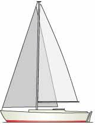
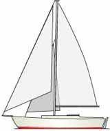
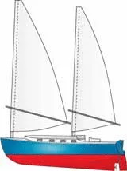
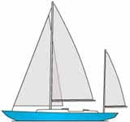
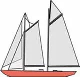

History of sailing
Sailing employs the wind—acting on sails, wingsails or kites—to propel a craft on the surface of the water (sailing ship, sailboat, windsurfer, or kitesurfer), on ice (iceboat) or on land (land yacht) over a chosen course, which is often part of a larger plan of navigation.
A course defined with respect to the true wind direction is called a point of sail.
Conventional sailing craft cannot derive power from sails on a point of sail that is too close into the wind. On a given point of sail, the sailor adjusts the alignment of each sail with respect to the apparent wind direction (as perceived on the craft) to mobilize the power of the wind. The forces transmitted via the sails are resisted by forces from the hull, keel, and rudder of a sailing craft, by forces from skate runners of an iceboat, or by forces from wheels of a land sailing craft to allow steering the course.
In the 21st century, most sailing represents a form of recreation or sport. Recreational sailing or yachting can be divided into racing and cruising. Cruising can include extended offshore and ocean-crossing trips, coastal sailing within sight of land, and daysailing.
The Different Types of Commercial Sailboats
| Sloop | Cutter | Ketch | Yawl | Schooner |
|---|---|---|---|---|
|  |  |  |  |  |
Sloop - a single-masted sailboat with just two sails — a foresail (aka headsail or jib) and a mainsail.It is the purest type of sailboat.The sloop rig can also be described as a Bermuda rig, Bermudian rig or Marconi rig.
Cutter- If a sloop has an additional sail between the headsail and the mainsail, then it's no longer a sloop - it's a cutter.Some cutters - like the one shown here - have the foresail set forward on a bowsprit, with the inner forestay permanently rigged to the stemhead where the foresail otherwise would be, or to a central chainplate further aft on the foredeck.
Ketch- a two-masted sailboat, a main mast forward and a shorter mizzen mast aft. But not all two-masted sailboats are ketches — they might be yawls (see below).A ketch may also sport a staysail, with or without a bowsprit, in which case it would be known as a cutter-rigged or staysail ketch.
Yawl- have their origins as old-time sail fishing boats, where the small mizzen sail was trimmed to keep the vessel steady when hauling the nets.Much like a ketch, the difference being that the yawl has the mizzen mast positioned aft of the rudder post whereas the ketch has its mizzen mast ahead of the rudder post.
Schooner- a two-or-more masted sailboat, in which the aft-most mast - the mainmast - is the same height or taller than the foremast.The one shown here is gaff cutter rigged, with a topsail set on the mainmast.Many sailors agree that of all the different types of sailboats, a schooner under full sail is one of the most beautiful sights afloat.